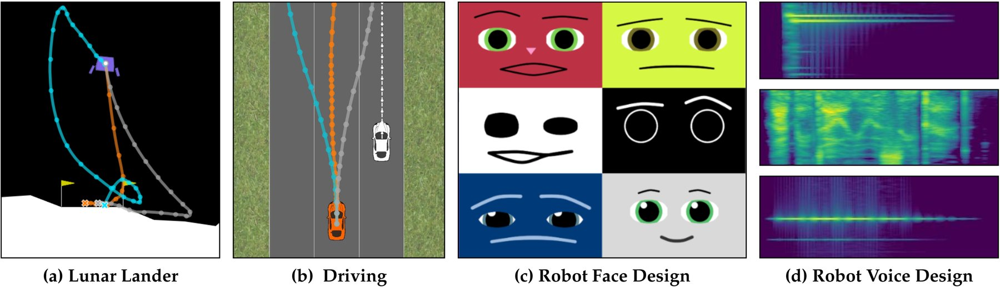
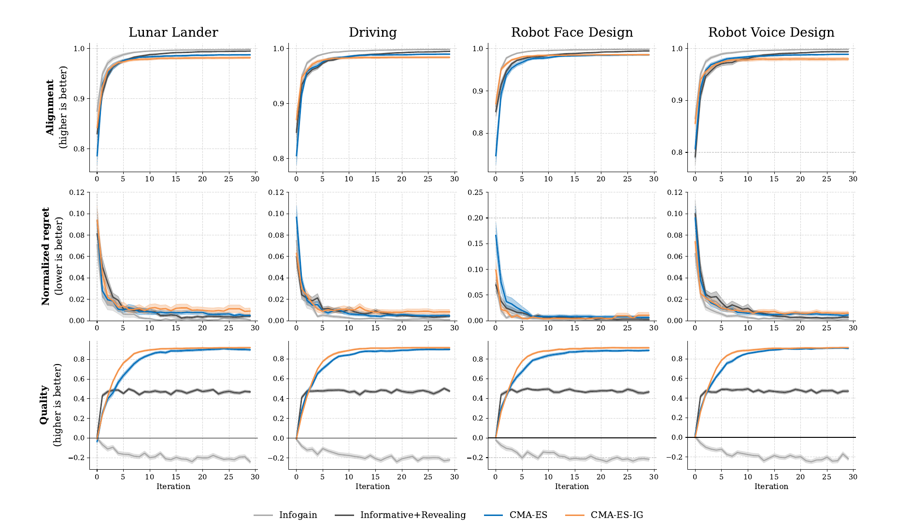
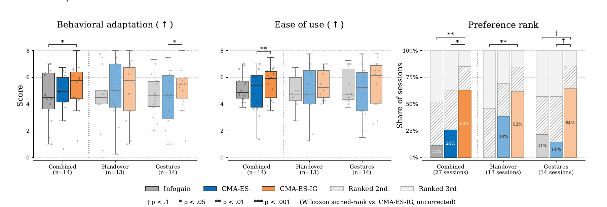

TL;DR Robots that learn from people's rankings usually pick questions only to learn as quickly as possible, so what they show users doesn't visibly improve. CMA-ES-IG samples candidates from an evolving CMA-ES search distribution and keeps a perceptually distinct, informative subset. In simulation it learns preferences as accurately as the baselines while showing better behaviours, and real users preferred it.
Try it: teach a Jaco2 how to hand you a cup
These are the same 1,000 handover trajectories our study participants ranked on the real robot. You sit across the table (the translucent figure). Each round, CMA-ES-IG shows you three. Rank them however you like. Everything runs in your browser.
Round 1
Watch all three, then click your favourite first.
You can also click a robot in the scene. Click a ranked one again to undo.
Updating…
Settings
CMA-ES-IG draws 100 samples from its search distribution, clusters them with K-means, and shows you the handovers nearest the 3 centroids. Switching algorithms starts a fresh session.
The robot model is the Kinova j2n6s300 URDF from kinova-ros. The features are an 8-D autoencoder embedding of the trajectories. The robot's guess comes from a particle belief over a linear reward, updated with the Plackett–Luce model.
Abstract
Robots that interact with humans must adapt to individual users' preferences to operate effectively in human-centered environments. An intuitive approach to learning non-expert users' preferences is through rankings of robot behaviors, such as trajectories, gestures, or voices. However, existing preference-learning techniques primarily optimize learning outcomes, such as sample efficiency and preference estimation accuracy, without explicitly accounting for how users experience the teaching process. In particular, while optimizing for information gain efficiently learns user preferences, it does not guarantee that the behaviors presented to users improve over time. This work introduces Covariance Matrix Adaptation Evolution Strategy with Information Gain (CMA-ES-IG), an algorithm that incorporates user experience into preference learning by generating candidate robot behaviors that are informative while additionally exhibiting improvement throughout the teaching process. Compared to state-of-the-art alternatives, CMA-ES-IG (1) scales more effectively to higher-dimensional preference spaces, (2) achieves comparable preference recovery while producing higher-quality queries across diverse learned feature representations, and (3) is preferred by non-expert users eliciting robot preferences through rankings. Our results highlight the importance of considering both learning outcomes and the user experience when designing preference-learning algorithms for human-centered robotics.
Method
Each behaviour ξ is described by features Φ(ξ), which can be hand-crafted or learned (an autoencoder, PCA, or pretrained embeddings). We model the user's reward as ω⊤Φ(ξ) and their rankings with the Plackett–Luce model. CMA-ES-IG combines two complementary ideas:
- 1Sample
Draw D = 100 candidates from the CMA-ES search distribution N(μ, C), which concentrates on high-reward regions.
- 2Diversify
Cluster them with K-means and show the K centroids. They are spread out, so easy to tell apart (the geometric goal of information gain), yet still representative of the distribution.
- 3Rank
The user orders the K behaviours. The belief over ω is updated with Bayes' rule.
- 4Adapt
The ranking drives the CMA-ES update of μ and C, moving the search toward what the user likes.
Query generation takes under 1 ms even in 32 dimensions. That is about 10,800× faster than optimising information gain directly (0.91 ms vs. 9.9 s).
Results
Simulation: scaling with feature dimension
In parameter-estimation tasks with d ∈ {4, 8, 16, 32}, CMA-ES-IG was non-inferior to every baseline in alignment and regret (margin 0.05). It produced significantly higher-quality queries than Infogain, Informative+Revealing, and CMA-ES at every dimension, and its lead over CMA-ES grew with dimension.

| Algorithm | d = 4 | d = 8 | d = 16 | d = 32 |
|---|---|---|---|---|
| Infogain | 172 ms | 620 ms | 4407 ms | 9900 ms |
| Informative+Revealing | 42.7 ms | 47.6 ms | 56.1 ms | 74.5 ms |
| CMA-ES | 0.02 ms | 0.02 ms | 0.02 ms | 0.03 ms |
| CMA-ES-IG | 0.72 ms | 0.73 ms | 0.79 ms | 0.91 ms |
Simulation: across learned feature spaces
The same pattern holds in four robot tasks that each use a different kind of feature space: random neural features (Lunar Lander), a VAE latent space (Driving), hand-crafted features (Robot Face Design), and pretrained embeddings + PCA (Robot Voice Design).


User study: real people, real robots
14 participants taught a Kinova Jaco2 how to hand over a marker, cup, or spoon, and a Blossom robot how to gesture happiness, sadness, or anger. Each used Infogain, CMA-ES, and CMA-ES-IG (algorithm names hidden).



BibTeX
@misc{dennler2026cmaesig,
title = {Improving through Interaction: Searching Behavioral Representation Spaces with {CMA-ES-IG}},
author = {Dennler, Nathaniel and Shi, Zhonghao and Tao, Yiran and Bobu, Andreea and Nikolaidis, Stefanos and Matari{\'c}, Maja},
year = {2026},
eprint = {2603.09011},
archivePrefix = {arXiv},
primaryClass = {cs.RO},
url = {https://arxiv.org/abs/2603.09011}
}